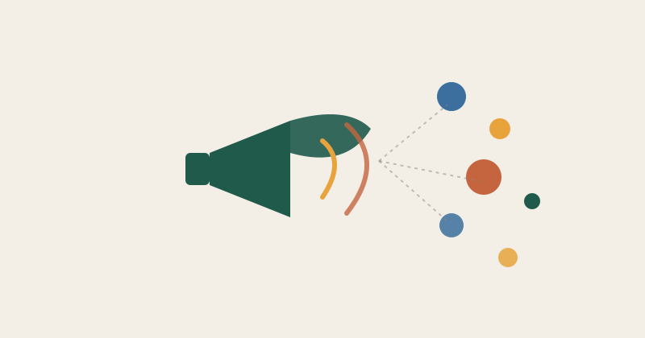

Servicios pensados para entidades de discapacidad, diversidad, accesibilidad e infancia con necesidades especiales.

Calendario editorial, diseño de piezas y storytelling de historias reales, con buenas prácticas de representación y consentimiento.
Optimización de páginas clave — voluntariado, recursos para familias, cómo ayudar — para captar el tráfico de búsqueda que ya existe. Incluye investigación de palabras clave real, no genérica.
Memorias anuales, dossieres para subvenciones y notas de prensa que cuentan resultados de forma clara y convincente.
Campañas de sensibilización, captación de socios o voluntariado, y rediseño de contenidos existentes para hacerlos accesibles.
Revisión de web, redes y documentos: lenguaje, contraste, estructura, lectura fácil y experiencia para personas con diversidad funcional.
Para gestión continua de contenidos y redes sociales, con entregas previsibles cada mes.
Presupuesto cerrado desde el inicio, ideal para campañas o memorias con fecha concreta.
Ajustados al tamaño y presupuesto real de cada entidad, siempre con transparencia total.